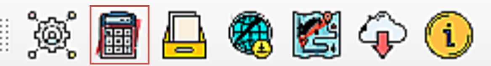
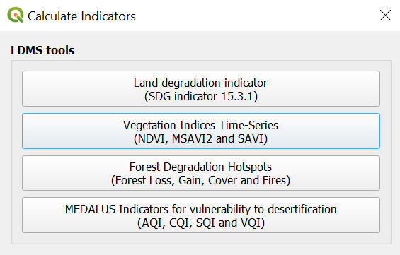
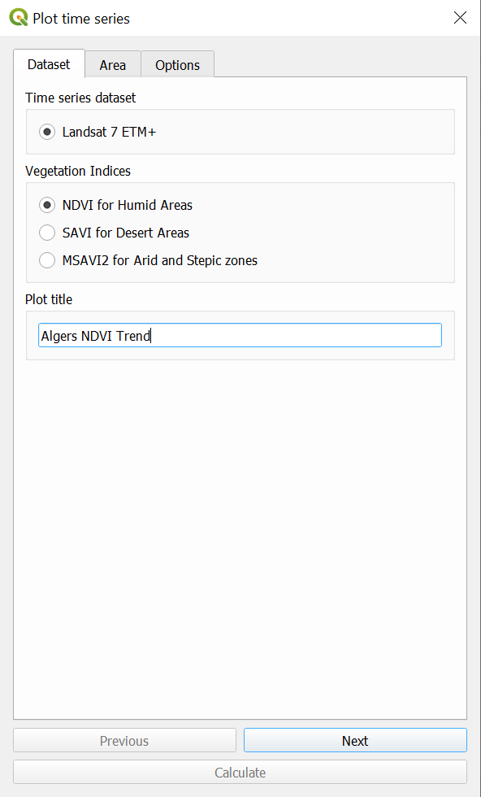
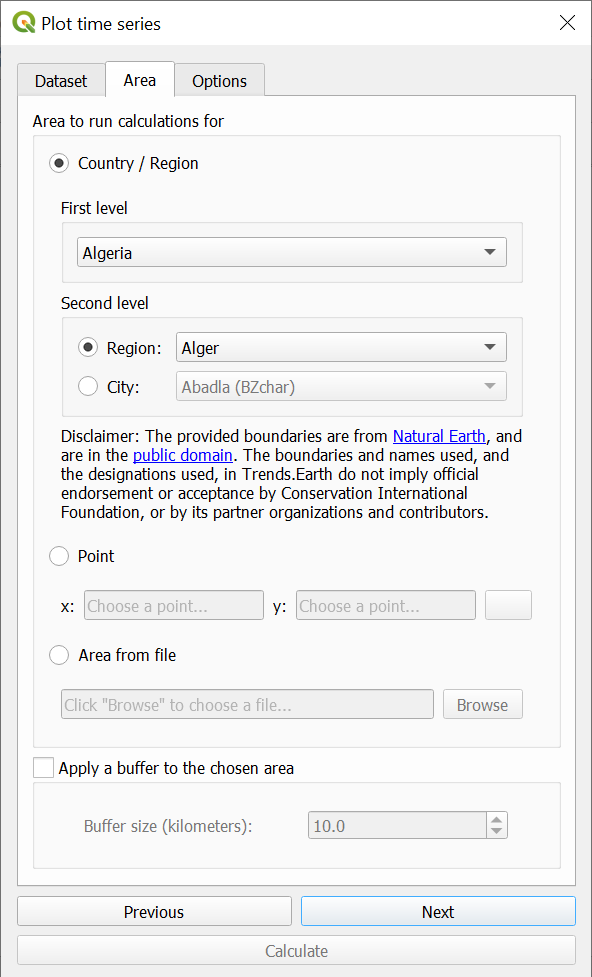
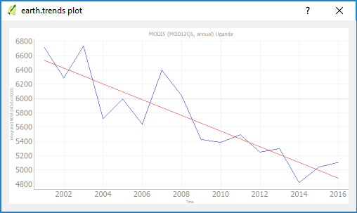

Tracer les données¶
To view plotted time series, select the time series tool below from the calculate icon. This will open up the Plot data dialog box:
The toolbox also supports plotting time series showing how a particular indicator has changed over time for NDVI, MSAVI2 and SAVI vegetation indices for Landsat 7 (2001-2020). To use this feature, click on the Plot data button from the toolbox bar. Then select a dataset, indicator, and area to plot:
  Lorsque tous les paramètres ont été définis, cliquez sur Calculer et la tâche sera envoyée à Google Earth Engine pour calcul. Lorsque la tâche est terminée (le temps de traitement varie en fonction du serveur, mais dans la plupart des pays, il ne dure que quelques minutes), vous recevrez un e-mail vous informant de la réussite de la tâche.
Utilisez l’outil Voir les tâches de Google Earth Engine décrit ci-dessus pour télécharger et tracer les résultats:
